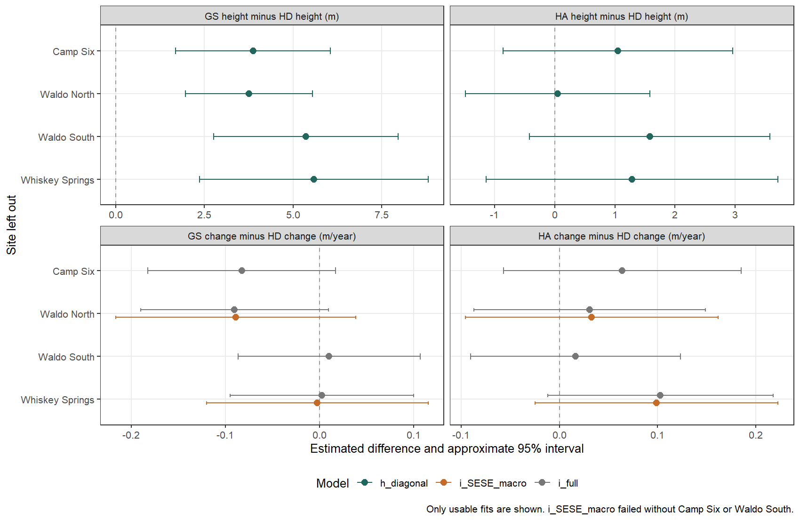

Status: Phase Three complete - display acceptance pending. Working target: One size/time figure; optional interval-rate companion.
What height adds to the regeneration story
Does retained overstory leave redwood with a developing cohort of tall sprouts, even where regeneration basal area is strongly reduced? Height helps distinguish the size attained by leading sprouts from the amount of regeneration occupying an area. We’ll review the thesis evidence before choosing a publication model and the smallest useful set of displays. The publication’s regeneration-first direction makes redwood development the main question, with tanoak providing ecological context; this task does not repeat RD02’s basal-area result.
Phase Three assesses the recommended models and their uncertainty. The Phase Three analysis adds the joint-height sensitivity, numerical investigation, and refitted bootstrap. All 692 recorded clumps are the intended cohort, as confirmed in human review on 6 November 2026. The resulting display is a proposal for acceptance; manuscript acceptance remains pending.
Evidence reviewed and numerical limits
The review uses the thesis Methods, Results, and Discussion, their QMD sources, analysis/analysis/sprouts_import_data.qmd, and analysis/analysis/sprout_modeling.qmd. On 6 November 2026 we also inspected analysis/sprout_modeling.rda and analysis/wrangled_sprouts.rda read-only in thesis R 4.3.2 with its existing library (glmmTMB 1.1.11). We checked saved calls, model frames, coefficients, variance components, convergence flags, and zero-random-effect predictions. Neither the thesis environment nor its saved objects was changed. Its startup reported an out-of-sync project, locale warnings, and a glmmTMB build under R 4.3.3; this inspection is not an environment validation.
The saved analysis contains 692 clumps: 334 redwood and 358 tanoak, across four sites and 16 treatment-unit macro plots. There are 2,076 height observations and 1,384 increments, with no missing outcomes in these saved frames. Treatment cell sizes range from 72 to 91 clumps for redwood and 78 to 95 for tanoak. The imported increments exactly equal \((H_5-H_1)/4\) and \((H_{10}-H_5)/5\). Those checks establish the content of the saved analysis, not the completeness of the original field cohort or the reason clump counts differ.
At the initial review, committed publication exports covered fuels and regeneration basal area, not sprout heights. An intentional sprout export in the thesis environment, with identifiers, factor levels, missingness, selection information where available, and historical prediction references, is a prerequisite for publication fitting. We must also reconcile those exports with the original workbook and field history before assuming that the complete saved frames imply no attrition. The existing exporter and manifest should be extended when we implement the analysis. Phase One below implements that boundary and documents what field history remains unavailable.
What the thesis models actually assume
The measured response is the height of the tallest sprout within a selected clump at each visit. The leading stem can change between visits. Consequently, the increment is change in clump maximum height, annualized over an interval, rather than necessarily the elongation of one continuously tracked stem. The saved variable named tree identifies the repeated clump record for this purpose. It is not evidence that the same individual sprout remained tallest.
Clumps were selected to be well distributed within macro plots. Redwood sampling also balanced clumps with and without residual standing trees. That is not a documented equal-probability sample of all clumps or stems. An unweighted model describes this selected clump cohort; generalizing to an area-wide clump mean requires a defensible sampling assumption or known inclusion weights. It cannot be interpreted as mean height of all regeneration, mean height of retained PCT trees, survival, recruitment, or an area-based productivity measure.
Interval height increment
The saved minc_sel is the source’s minc15, with Gaussian response and identity link. Writing period for the factor stored as year (5 = years 1–5; 10 = years 5–10), its conditional mean formula is:
The source uses globally unique tree and plot IDs for clump and macro. Residual dispersion is ~ spp * period * treat, allowing 16 species–treatment– period residual scales. The macro effect is a two-species unstructured covariance matrix: separate species variances and one correlation, not a separate common macro intercept plus an additional species effect. The clump intercept variance is common to both species. There is no separate site term in this saved model. The glmmTMB covariance documentation explains the distinction between unstructured and diagonal species effects.
This specification allows species-specific treatment differences and species-specific changes between periods. It constrains the period change to be identical across all treatments within a species: neither treatment × period nor the three-way mean interaction is present. A lack of those terms does not establish equal temporal responses. Conditional residuals are independent after the clump and macro effects; the clump intercept induces nonnegative covariance between its two increments. Random effects are Gaussian, independent across grouping levels, and independent of predictors. Residual heterogeneity does not replace either clustering or a suitable within-clump covariance.
The saved fit reports convergence code 0 and a positive-definite Hessian. Clump SD is 0.115 m yr-1; macro SDs are 0.141 for redwood and 0.059 for tanoak, with correlation 0.254. These estimates support inspecting unequal species variation, without establishing that this covariance structure is adequate or precisely estimated from 16 macro plots.
Height at year 10
The saved ht10_sel is mht1011, a Gaussian response with a log link:
The response itself is not log-transformed. Residual variation is additive on the metre scale, while the conditional mean is positive and multiplicative in the predictors. A Gaussian distribution can still generate negative heights: a log link restricts its mean, not its support. The model assumes a shared site intercept on the log-mean scale and correlated species-specific macro intercepts. No clump intercept is needed for one response per clump.
This fit also reports convergence code 0 and a positive-definite Hessian. Macro SDs on the log-mean scale are 0.195 for redwood and 0.159 for tanoak, with correlation 0.475. Site SD is approximately 0.000021, effectively at the boundary. This is weak information about a site variance, not proof that blocking is scientifically irrelevant. Four sites remain four treatment replicates per treatment; the hundreds of clumps are subsamples.
Validity and precision of the thesis interpretation
Patterns supported by the saved means
The following historical values were reproduced from the saved coefficients and response predictions with random effects set to zero. They are not new publication estimates. Increment means give the two intervals equal weight.
Species
Increment GS
Increment LD
Increment HA
Increment HD
Year-10 height GS
Year-10 height HD
Redwood
0.957
0.800
0.633
0.556
10.384
5.810
Tanoak
0.474
0.379
0.306
0.299
5.127
3.117
Increment units are m yr-1; height units are m. The extra digits make this audit identifiable, not biologically precise. The year-10 means match the rendered thesis’s 10.38–5.81 m and 5.13–3.12 m ranges, rather than the older 10.29–6.16 m and 5.12–3.04 m values left in the modeling notebook.
The broad descriptive pattern is coherent: leading redwood sprouts were taller and had larger increments than tanoak; GS means were largest; HA and HD were lower, particularly for redwood. These observations add a size dimension to RD02’s area-based regeneration response. They do not establish every adjacent treatment difference or a continuous response to measured light.
Corrections needed before publication
The model and prose disagree about interactions. The thesis year-10 Results say the model lacks species × treatment and therefore gives parallel treatment comparisons. The saved fit contains that interaction, as do the Methods’ final specification. The increment notebook also says an interaction is absent after assigning a model that contains it. Distinguish an AIC-preferred reduced candidate from the retained research-question model. With a log link, omitting the interaction would impose common treatment ratios, not common metre differences. Nonsignificant interaction tests do not establish equivalence.
The species response claim needs its own contrast. In the retained increment model, treatment coefficients alone refer to the reference species, tanoak. Redwood treatment differences combine those coefficients with the interaction. A range of coefficient p values is not an omnibus treatment test. The saved redwood-versus-tanoak difference in the HD–GS increment response is about -0.227 m yr-1, with an individual asymptotic Wald p value of 0.029. This does not supply a multiplicity-adjusted family test, but it shows why the blanket statement that the interaction was nonsignificant is imprecise. Publication claims need explicitly defined contrasts and uncertainty.
Period means mix historical versions and weighting conventions. The text’s 0.80 to 0.67 m yr-1 for redwood and 0.39 to 0.34 for tanoak agrees approximately with equally weighted treatment predictions (0.803 to 0.670; 0.385 to 0.344). The thesis temporal prediction call uses newdata = NULL, averaging observed rows; that gives 0.804 to 0.672 and 0.384 to 0.342 in the saved fit. We should use one declared weighting rule and regenerate prose from its results. The period decreases are 0.132 and 0.041 m yr-1 in every treatment by model construction, not eight independently demonstrated changes.
Equal-period averaging is not the nine-year annual rate. The two intervals last four and five years. An equal-period mean is \((I_1+I_2)/2\); the annualized years 1–10 change is \((4I_1+5I_2)/9\). Neither includes years 0–1. Label these quantities explicitly; prefer separate intervals if temporal development is the scientific point.
Response-scale prediction is not random-effect integration. The thesis helper explicitly uses re.form = NA, setting random effects to zero, as described in the prediction documentation. For identity-link increments, zero-mean random-effect integration leaves the mean unchanged. For log-link year-10 height it gives \(M_{st}=\exp\{x_{st}^{\mathsf T}\beta+(\tau^2_{\mathrm{site}}+
\tau^2_{\mathrm{macro},s})/2\}\) under this model. This is integration over log-mean random effects; there is no lognormal residual correction for a Gaussian response with a log link. The current factors are about 1.019 for redwood and 1.013 for tanoak. The distinction is small here but must remain explicit, especially if we change the hierarchy or family. As in RD02, treatment-constant integration factors preserve within-species ratios.
Asymptotic intervals have limited replication behind them. The thesis prediction-to-emmeans helper uses df = Inf and reconstructs mean covariance from mean and pairwise-difference SEs. The resulting comparison arrows are not ordinary confidence bars or an independent validation of contrasts. Reproduce their covariance, contrast scale, and adjustment before retaining any historical pairwise claim. The printed p = 0 is rounding, never an exact zero probability. New displays should show intervals for means and report selected contrasts separately. Model selection, sampling selection, measurement error, and covariance-structure uncertainty are not included in those Wald intervals. Convergence flags alone do not verify residual fit or interval coverage.
What the biological interpretation can support
Tallest-clump height is relevant to the potential size of a future retained sprout. It does not identify the stems actually retained after PCT or demonstrate their subsequent performance. Height and basal area may respond differently because one describes selected clump maxima and the other integrates stem sizes and occurrence per area. That difference is informative rather than contradictory.
Treatments combine overstory amount and spatial arrangement. HA versus HD is the direct arrangement comparison at similar target retention; a small, uncertain difference does not establish that aggregation has no effect. The treatment gradient is consistent with light limitation, but height models alone do not isolate light from other treatment-associated conditions or establish a species’ physiological shade tolerance. An SDI or light model would ask a different question.
The thesis suggestion that roughly 32–38 m2 ha-1 is an upper retention bound for sustaining redwood growth beyond ten years exceeds what four categorical treatments and a ten-year record establish. We can say that leading redwood sprouts continued gaining height under the studied high-retention treatments, at lower estimated rates than GS. We cannot estimate a continuous threshold, long-term sustainability, stand yield, or an optimal cutting cycle from these fits.
Proposed revisions and sensitivity tests
Our working target is arithmetic mean tallest-clump height, or its interval change, for the sampled clump cohort under each treatment. We should standardize comparisons across equally weighted treatments and sites and state whether means average the four observed sites or integrate an exchangeable site population. The latter matches RD02’s presentation, but adds a generalization assumption that four sites estimate poorly. Neither target automatically represents all clumps per hectare. If field information supports redwood sampling-stratum weights, report that explicitly rather than silently redefining the population.
We’ll keep year-10 height as the primary size endpoint and interval increment as the complementary temporal endpoint. Start with the thesis response families as reference fits, retain species-specific treatment means, and test the following limited alternatives. These are proposed candidates, not an invitation to choose whichever produces the strongest treatment significance.
Proposed change or test
Assumption retained, relaxed, or introduced
Evidence needed for a decision
Represent site blocking in both endpoints; compare site fixed effects with site random intercepts, retaining macro clustering
Replaces the increment model’s independence of different treatment units at the same site. Fixed sites condition inference on these four blocks; random sites assume exchangeability and a Gaussian site distribution.
Treatment estimates and intervals under both specifications, variance boundaries, and four leave-one-site-out fits. Do not delete design clustering solely for AIC or a near-zero estimate.
Compare the joint unstructured species macro effects with diagonal effects and separate species fits, allowing species-specific clump variance for increments
Diagonal effects remove cross-species macro covariance; separate fits also remove shared variance constraints. The thesis shares clump variance across species. Separate species-specific site variances relax the common site variance but are weakly identified from four sites.
Same response rows and family for the covariance comparison; inspect variance estimates, correlations, optimizer agreement, and treatment uncertainty. Separate fits can describe species means but do not supply covariance for a species-difference test.
Retain treatment × species; compare increment means with treat * spp * period
Relaxes the imposed common period change across treatments. The full mean model permits treatment-specific slowing or acceleration within each species.
Period-change contrasts and their species/treatment differences, with intervals. Absence of a detected interaction is not temporal equivalence. A reduced model needs a scientific interpretation as well as fit support.
Compare saturated dispersion with spp * period and additive treatment dispersion for increments; spp + treat versus spp * treat for year 10
Reduced dispersion pools residual scales across some cells. It does not pool treatment means or solve clustering. Separate-species fits permit their own residual scales.
Residual spread and tails by species, treatment, period, and macro plot; fit stability and changes in interval widths. Retain supported heterogeneity rather than simplifying to improve significance.
Test within-clump covariance of the two increments; compare the shared intercept with a directly estimated two-period covariance
The thesis allows only nonnegative residual association through a common clump intercept. An unstructured two-period covariance permits either sign and different variances, but needs an identifiable parameterization.
Estimate covariance after macro/site effects. Do not add a full two-period covariance on top of freely varying period residual variances and a clump intercept: these components cannot all be identified from two outcomes per clump.
Compare year-10 Gaussian identity/log links and positive Gamma(log); use a lognormal alternative only if residual evidence warrants it
Identity link models additive metre effects; log links model proportional conditional effects. Gamma imposes positive support and variance proportional to squared mean within a dispersion group. Lognormal assumes Gaussian log-height residuals and needs residual as well as random-effect integration for arithmetic means.
Observed/predicted distributions and lower-tail/negative-height simulation frequency, residual scale, convergence, and estimates on the same arithmetic-mean target. Do not use Gamma for increments if valid zero or negative increments exist in the audited input.
Fit heights at years 1, 5, and 10 jointly as a targeted sensitivity, with categorical age and identifiable within-clump covariance
Avoids treating two differences sharing year 5 as conditionally independent. Categorical age avoids assuming linear growth or extrapolating a curve from three visits. It introduces a model for the three-level covariance and all-age means.
Derive \((M_5-M_1)/4\), \((M_{10}-M_5)/5\), and year-10 means from one fit, retaining covariance. Compare these estimands with the two-endpoint analysis; use the joint model as primary only if its assumptions and stability are preferable.
Compare zero-effect, integrated, and observed-site standardized predictions; equal-period and duration-weighted summaries
Changes the prediction target or averaging weights, not necessarily the fitted model. Integration assumes the specified random-effect distribution represents the target population.
Reconcile implementation by direct prediction, analytic integration where available, and numerical checks. Propagate variance-parameter uncertainty for integrated means. Never label a change of estimand as a biological change.
Why the shared year-5 measurement matters
If measured heights have independent errors \(e_1,e_5,e_{10}\), then the two increment errors are \((e_5-e_1)/4\) and \((e_{10}-e_5)/5\). Their covariance is \(-\operatorname{Var}(e_5)/20\). A persistent clump growth tendency can instead produce positive association. The thesis clump intercept represents the latter but cannot by itself represent the former. This derivation does not prove that the fitted covariance is wrong; it identifies a scientifically motivated sensitivity with a possible consequence for uncertainty in growth-rate change. With no replicate height measurements, measurement-error variance cannot be separately learned without additional assumptions or external precision data. Two intervals also cannot establish a general serial-correlation process.
Selection and uncertainty sequence
First audit identity, measurement definitions, interval lengths, original missing records, and any mortality or leader replacement notes. Resolve the redwood residual-tree sampling stratum: its indicator is described in the import source but omitted from the selected columns. If recoverable, use it for a targeted sampling/composition sensitivity, recognizing that residual-tree status is treatment-related and adjusting for it changes the question. Likewise, conditioning on year-1 height estimates later development at a common post-treatment size; it is not a correction for a pretreatment covariate and should not replace the unadjusted treatment comparison. Do not treat absent/dead clumps as zero heights without field justification, or invent missing-data weights from these complete saved frames.
Next fit the reference and design/covariance alternatives on identical audited rows. Use maximum likelihood when comparing fixed-effect structures. Compare AIC within the same endpoint and likelihood basis; AIC across height and increment responses is meaningless. A model for log(height) needs the response-transformation Jacobian before comparing its likelihood with original-height models. Keep scientific mean terms needed for planned contrasts even when their individual coefficients are weak. Avoid stepwise selection over every interaction.
Require numerical convergence, a usable Hessian, and agreement under a second optimizer for plausible finalists. Inspect boundary variances, residual and simulation diagnostics by species/treatment/period, within-clump association, macro-level residual patterns, and influential sites. Four leave-one-site-out analyses diagnose sensitivity; they do not turn three-site fits into precise estimates or justify dropping an inconvenient site. A small AIC difference or nonsignificant diagnostic is weak evidence, as RD02 demonstrated.
Compare finalist mean estimates and intervals for GS versus HD (retention contrast), HA versus HD (arrangement contrast), and the second-minus-first interval change. Add species differences in those responses only with a joint covariance model or a paired resampling method that preserves sites, macro plots, and both species. Predeclare contrast families and a multiplicity approach (for example Holm adjustment for a small confirmatory family); keep other contrasts exploratory. GS–HD compares complete treatments, not an isolated continuous basal-area effect. Use metre differences for size and m yr-1 differences for increment; report ratios as an additional interpretation only when useful. Avoid claiming equal responses without a biologically justified equivalence margin.
For the preferred specification, assess the sensitivity of Wald uncertainty with a refitted parametric bootstrap that preserves the hierarchy, heterogeneity, and repeated measurements, including variance-parameter uncertainty in integrated means. Predeclare a seed and simulation count, report failed/boundary refits, and examine stability of interval endpoints. This assesses inference under the fitted model, not robustness to unmodeled sampling bias. Resampling just four sites nonparametrically is a weak sole basis for coverage. A within-site treatment randomization sensitivity is possible only after confirming the assignment scheme in the experimental record; it tests a different, design-based null. Intervals conditional on a selected model still omit model-selection uncertainty.
RD02 motivates design-aware clustering, explicit estimands, species-specific variance checks, optimizer checks, and caution with four-site asymptotics. Its hurdle-Gamma occurrence process does not transfer automatically: these height records are selected clumps, not vegetation plots with recorded absence. We should select the simplest scientifically adequate height model and report material sensitivity, even if the treatment ordering remains unchanged.
Proposed publication displays
1. Main figure: attained height and temporal change
Use one four-panel figure, with redwood and tanoak as columns. The top row shows year-10 mean tallest-clump height by treatment (GS, LD, HA, HD), in metres, with 95% intervals. The bottom row shows the estimated change in annualized increment, years 5–10 minus years 1–5, by treatment, with 95% intervals and a zero reference line. Use a common height scale across species for direct size comparison and a common increment-change scale across species in the bottom row. Keep the species colors/shapes used in RD02 and state that the sampling units differ.
This joins attained size with the genuinely additional temporal question without repeating the treatment-averaged increment figure. It can show a continued redwood height advantage alongside slower later development. Do not imply treatment-specific temporal evidence if the selected mean model constrains all treatment changes to be equal: in that case collapse the bottom row to one species-wise change panel, labeled as averaged across treatments. If temporal evidence proves too fragile or secondary, retain the year-10 row as the main figure and move the temporal display to the supplement.
Provisional caption structure: “Tallest-sprout development in sampled redwood and tanoak clumps under four retained-overstory treatments. Upper panels show modeled mean height at year 10; lower panels show later-minus-earlier annualized height change. Points and ranges denote arithmetic means or contrasts and their 95% confidence intervals [state site standardization/integration and uncertainty method after selection]. Heights follow the tallest stem in each clump at each visit, which need not be the same stem. Clumps are subsamples of 16 treatment units in four sites; intervals describe mean uncertainty.” Define treatment abbreviations in the final caption. Do not include significance arrows or infer pairwise differences from overlapping mean intervals.
2. Optional companion: interval rates without averaging them away
If absolute growth rates matter for the management interpretation, use two species panels with treatment on the x-axis and paired points for years 1–5 and 5–10, in m yr-1, with uncertainty. A light connector within each treatment can show the interval change; it is not a continuous annual growth trajectory. Use the same vertical scale for both species. Prefer equally weighted site summaries as subdued observed context, with four site symbols per treatment, over a dense cloud that makes hundreds of clumps look like treatment replicates. Label observed summaries separately from model estimates and omit them if they obscure the intervals.
This is an alternative temporal view or a supplement, not a second mandatory main-text figure duplicating the lower row above. It preserves the thesis’s approximate 0.80-to-0.67 redwood and 0.39-to-0.34 tanoak story while allowing the revised analysis to reveal treatment dependence. Keep full estimates, interval definitions, planned contrasts, and sensitivity evidence in a companion table. No invented confidence limits or schematic results are needed at this stage.
Initial review conclusion
The thesis provides credible preliminary evidence that selected leading redwood sprouts attained greater height under lighter retention and continued developing under the higher-retention treatments. Its model/prose mismatch, selected-clump sampling target, imposed temporal structure, and limited treatment replication prevent us from carrying its precision and significance language forward unchanged. The proposed tests separate changes to biological response assumptions from changes to covariance and prediction targets. A compact size-plus-time display can then complement RD02 without implying that tall sprouts alone establish successful cohort recruitment or a long-term retention threshold. Model choice, interval calibration, and final captions remain open until these tests are run.
Phase One: audited inputs and human review
Can we trace every modeled clump to the workbook, and what population can those records describe? This first phase implements the audit and export prerequisites in the selection sequence. Phase Two will fit the reference and limited design/covariance candidates; later selection, bootstrap uncertainty, and display acceptance follow that comparison. The phases make the existing sequence explicit without accepting any candidate model in advance.
We exported both workbook sheets, the saved wide measurements with original and renumbered identifiers, the historical response frames, and plain prediction references in thesis R 4.3.2. The exporter checks every imported column against the workbook and reproduces the saved long frames. It preserves the historical factor levels (LIDE, SESE; GS, LD, HA, HD), row order, and missing values. No fitted model crosses the publication boundary. The manifest protects the workbook, saved objects, import/model sources, Methods, and existing thesis environment. The thesis startup still reports its existing synchronization, locale, and package-build warnings; no packages or lockfiles were changed. Replaying the shared exporter also rewrote the existing fuel/regeneration RDS files with a UTF-8 serialization header. Read-back comparisons with the committed baseline confirmed identical R objects, and the historical CSV checksums are unchanged; those analyses therefore require no numerical refresh.
The following audit runs in publication R 4.6.2 using only exported measurements. An ordinary render reads saved audit tables; -P recompute:true refreshes these deterministic calculations. -P refit:true also runs the Phase Two fits below; it does not refit any thesis analysis or RD02 model.
Identity, repeated measurements, and interval definitions
We require unique original clump keys and a one-to-one map to the saved clump IDs. Each macro plot must belong to one site and treatment, each site must have all four treatments, and every clump must have three heights and two increments. The numerical checks below use a tolerance of 10-12 m yr-1 for spreadsheet roundoff; no height or increment is replaced or rounded in the input.
All available workbook rows are accounted for in the saved analysis. The Age10all sheet supplies 692 clumps, while Age10tallest50tpha contains a 320-row subset with the same original keys and heights. The latter has ten clumps per site/treatment/species cell and ranks 1–10; it is an outcome-selected subset, not additional replication or an attrition record. We retain the full 692-row cohort for the planned comparison and do not apply the workbook’s saved display filter. The original plot numbers and clump labels remain available alongside the saved globally unique plot and tree factors.
We count clumps within the actual treatment units because these counts reveal sampling composition without treating clumps as independent treatment replicates. The selected-height subset is counted separately to expose the selection.
There are 334 redwood and 358 tanoak clumps, 2,076 height observations, and 1,384 increments across four sites and 16 macro plots. Redwood treatment totals range from 72 to 91, and tanoak totals from 78 to 95. The Methods describes approximately 25 clumps per species per macro plot, rather than an exact initial roster. Human review suggests that some blocks had too few clumps to reach that approximate target and confirms this recorded cohort as the analysis population. That explanation is plausible field context, not a recovered enrollment ledger. Complete rows do not establish complete follow-up of an original cohort.
Response support and recoverable sampling information
We check missingness and support before considering response families. This also makes the distinction between recorded interval change and growth of one continuously tracked leader explicit: the measurements follow the tallest sprout in each clump at each visit.
Code
if (recompute) { support <-bind_rows(lapply(c("ht1", "ht5", "ht10", "ht_inc5", "ht_inc10"), function(v) { x <- d[[v]]data.frame(variable = v, n =length(x), missing =sum(is.na(x)),zero =sum(x ==0, na.rm =TRUE), negative =sum(x <0, na.rm =TRUE),minimum =min(x, na.rm =TRUE), maximum =max(x, na.rm =TRUE),unit =if (startsWith(v, "ht_inc")) "m yr-1"else"m") }))stopifnot(all(support$missing ==0), all(is.finite(support$minimum)),all(support$minimum >0))write_audit(support, "response-support")}knitr::kable(read_audit("response-support"), digits =4)
variable
n
missing
zero
negative
minimum
maximum
unit
ht1
692
0
0
0
0.050
4.07
m
ht5
692
0
0
0
0.580
9.50
m
ht10
692
0
0
0
0.900
15.40
m
ht_inc5
692
0
0
0
0.035
1.60
m yr-1
ht_inc10
692
0
0
0
0.002
1.62
m yr-1
All recorded heights and increments are positive. This removes a support-based objection to a positive increment family on these rows, but does not establish that Gamma is appropriate. The planned Gaussian increment reference remains unchanged. Neither valid negative increments in a future corrected input nor missing/dead clumps should be silently removed or recoded to fit a family.
The workbook’s ResidRWonClumpYN was omitted from the thesis import. We recover its numeric codes as residual_rw, retaining NA for tanoak. Human review confirms that 1 means a residual redwood tree was left on that clump following harvest; GS has none because all trees were cut. Such a tree could augment or suppress basal-sprout development. We tabulate composition before exploring that association, without assuming its direction.
Redwood has 197 code-0 and 137 code-1 clumps; tanoak has 358 missing indicators, so its missing values must not be treated as code 0. All 91 GS redwood clumps have code 0. LD has 41/31, HA 35/52, and HD 30/54 code-0/code-1 clumps. Thus the redwood indicator is treatment-associated and lacks overlap in GS. Adjusting for it would change the treatment question and cannot identify every within-stratum treatment comparison. We have no area-wide stratum frequencies or inclusion probabilities from which to calculate sampling weights.
Descriptive context and historical reference
We summarize each species within each macro plot first, then weight the four sites equally for a descriptive treatment summary. These are observed sample means, not fitted estimates or confidence intervals. Duration weighting uses four and five years, so the years 1–10 annual rate equals (H10-H1)/9.
The equal-site summary helps assess the direction of change without allowing larger sampled cohorts to dominate a treatment. The four site means in the preceding table retain the variation behind each treatment summary.
The observed year-10 means decrease from GS through LD and HA to HD in both species: redwood spans 10.480 to 5.929 m, and tanoak 5.213 to 3.142 m. The later interval has a lower observed annual increment in all eight cells. Redwood changes range from -0.159 to -0.066 m yr-1, compared with -0.048 to -0.037 for tanoak. These summaries motivate testing treatment-specific temporal means; they do not establish significant contrasts or validate a particular covariance structure.
For traceability, the historical table below contains direct saved-model predictions checked against the fixed-effect design matrix in thesis R. Its SEs are historical model-based mean SEs; they do not validate four-site coverage or establish any new contrast. Period codes 5 and 10 mean years 1–5 and 5–10.
The available records now support a reproducible analysis of the selected, recorded clump cohort, retaining all 692 rows. They do not resolve whether the workbook was assembled only from surviving or otherwise eligible clumps. We found no original enrollment roster, mortality/absence ledger, per-visit leader IDs, or inclusion probabilities in the workbook, import/model sources, Methods, work log, or relevant repository notes; the workbook has no cell comments or additional sheets documenting those events. The tally of roughly 25 clumps per species per macro plot is insufficient to reconstruct an attrition denominator. These are missing field-history evidence, not failed numerical checks.
Human review on 6 November 2026 confirmed the recorded cohort as the intended target and defined the indicator as a residual redwood tree left on the clump following harvest. GS has no such trees because all trees were cut. Unequal counts may reflect too few available clumps in some blocks; no original roster was supplied to verify that explanation. No sampling weights, zero-height replacements, survival claims, or unobserved leader histories have been inferred. If new field information changes inclusion or measurements, refresh the export and this audit before fitting.
The next agent should read this section and the candidate plan, verify export integrity with python publication/scripts/check-analysis.py --inputs-only --protected, and use inputs/thesis/sprouts/measurements.rds in the publication environment. Preserve the exported factor coding and original ID crosswalk; use all rows, not the tallest-ten subset. The historical frames and 24 prediction cells provide reproduction references, not publication estimates. Start Phase Two with the thesis reference fits and the limited site-blocking, species-macro covariance, and increment temporal-mean alternatives on identical rows. Use ML for fixed-effect comparisons, retain design clustering, and record convergence, Hessian, variance boundaries, second-optimizer agreement, and leave-one-site-out sensitivity. Do not add an unidentified full two-period covariance on top of unrestricted residual variances and a clump intercept.
Before reporting publication means, resolve observed-site versus exchangeable-site standardization and predeclare contrast families and multiplicity handling. Keep residual-tree adjustment as an explicitly conditional sensitivity, subject to the GS overlap limitation. Bootstrap calibration and final displays follow model review; RT02, M02, and D02 remain queued. Human review should precede the next phase.
Phase One establishes traceable inputs and exposes a consequential selection limitation that complete analytical frames alone concealed. It also recovers a sampling indicator that can inform a carefully bounded sensitivity. The main scientific limitation remains generalization beyond the selected recorded clumps; model fitting cannot recover the missing field history or establish survival.
Phase Two: which models should we carry forward?
We want to answer two questions: how tall were the leading sprouts after ten years, and did their annual height change slow between the two measurement periods? We also ask whether a redwood tree left on the same clump helps explain the sprouts’ development. We use all 692 recorded clumps. These are the clumps approved for this analysis; they do not tell us how many other clumps survived or how much regeneration grew across a whole stand.
This review follows model purpose → results → decision. A model kept “for comparison” is a useful benchmark for checking whether another model changes the answer. It is not another recommended main model. We use that wording instead of saying that we “retain a sensitivity.”
The main comparisons give each of the four observed sites equal weight. When we report a mean height, we mean the ordinary average in metres, allowing for the model’s estimated variation among macro plots. The intervals in this phase are approximate: they do not yet include all the uncertainty in that estimated variation. The completed Phase Three analysis below reports the later checks and bootstrap results. This rewrite reviews the existing fits; it does not fit more models.
Reading the model formulas and AIC scores
The same terms recur throughout, so we explain them once here:
ht10 is tallest-sprout height at year 10, in metres. ht_inc is annual height change within a period, in m/year. The leading stem can change between visits, so this need not be growth of the same individual stem.
treat is GS, LD, HA, or HD. spp distinguishes redwood (SESE) from tanoak (LIDE). period is years 1–5 (code 5) or years 5–10 (code 10).
a * b includes both terms and lets the effect of one depend on the other. Thus treat * spp lets treatments have different effects on the two species. treat * spp * period also lets the amount of slowing differ among treatments and species.
site gives each of our four sites its own adjustment. (1 | site) instead treats these as four examples from a wider population of sites and estimates how much sites vary. We prefer the first approach for conclusions about these four sites.
(1 | plot) lets macro plots sit above or below the treatment mean. plot means a treatment-unit macro plot here. (1 | tree) does the same for repeatedly measured clumps; despite its name, tree identifies the clump.
(0 + spp | plot) gives each species its own macro-plot adjustment and estimates whether the two adjustments move together. diag(0 + spp | plot) keeps the separate adjustments but does not estimate that connection.
dispformula controls the scatter around the fitted means, not the means themselves. For example, ~ spp * treat allows a different amount of scatter for each species–treatment group.
The height models start with family = gaussian("log"): average height is modeled through a log link, while errors are measured on the original metre scale. This keeps the fitted mean positive, but simulated individual heights can still be negative. Growth models start with family = gaussian(), so they model changes directly in m/year and can represent either increases or decreases.
AIC helps compare fit while charging a model for extra fitted parameters. Lower is better, including when scores are negative. A small difference of one or two points gives little reason to favor one model strongly; a much larger difference is more persuasive. AIC is a ranking among the models tested, not a test that the winner is correct. We compare height models with height models and growth models with growth models, using the same response records and fitting method. We never compare a height AIC with a growth AIC. The R AIC documentation sets out that same-data requirement.
Fitting and prediction helpers
These folded helpers apply the same fitting checks and prediction calculations to every model. A saved model is required for recomputation; only refit:true authorizes the complete fitting sequence. The focused refit_temporal:true mode fits the added species-specific temporal-macro candidates, their optimizer checks, and site omissions while reading every other saved fit. We retain warnings and unsuccessful numerical fits in the register rather than quietly discarding them. Model RDS files remain ignored; tables and diagnostic figures remain versioned.
First models: height and growth with both species together
We begin with models that include both species in one fit. The names in code font are the exact model IDs used in the results tables and saved files.
Height model h_reference reproduces the thesis starting model. It lets treatment effects differ between species, allows linked species responses within a macro plot, and estimates a separate amount of variation among sites. All three height models below use gaussian("log") and the same dispformula = ~ spp * treat.
h_fixed replaces (1 | site) with site. Instead of trying to describe a wider population of sites from only four examples, we give the four observed sites their own adjustments. The treatment question is otherwise the same.
# h_fixed — replace the site term in h_referenceht10 ~ treat * spp + (0+ spp | plot) + site
h_diagonal removes the estimated connection between species’ macro-plot adjustments. Redwood and tanoak can still vary by different amounts among macro plots. This asks whether estimating that extra connection helps enough to justify keeping it.
# h_diagonal — replace the macro-plot term in h_fixedht10 ~ treat * spp +diag(0+ spp | plot) + site
Growth model i_reference reproduces the thesis growth model. Its period * spp term lets each species grow more slowly in the later period, but forces that amount of slowing to be the same under every treatment within the species. It includes repeated-clump and macro-plot adjustments, but no site term. All four growth models below use gaussian() and dispformula = ~ spp * period * treat.
i_fixed adds site; i_diagonal then simplifies the species link within macro plots, just as h_diagonal did. These changes account for the four study sites and check whether the cross-species connection is needed. Neither change allows slowing to differ among treatments yet.
# i_fixed — add site to i_referenceht_inc ~ treat * spp + period * spp + site + (1| tree) + (0+ spp | plot)# i_diagonal — simplify the macro-plot term in i_fixedht_inc ~ treat * spp + period * spp + site + (1| tree) +diag(0+ spp | plot)
i_full replaces the mean terms with treat * spp * period. Now GS, LD, HA, and HD can have different amounts of slowing in each species. This is the first of these joint models that can directly answer whether treatments differ in how growth changed between periods.
# i_full — allow treatment-specific change between periodsht_inc ~ treat * spp * period + site + (1| tree) +diag(0+ spp | plot)
The table compares these models and the additional checks described after it. convergence = 0 and pd_hessian = TRUE mean that the fitting checks did not identify a numerical failure. They are prerequisites for using a fit, not evidence that its assumptions are right. The folded fitting code preserves all the tested specifications for review.
The reproduction check asks whether h_reference and i_reference recover the thesis predictions. If they did not, we would need to resolve that problem before interpreting differences caused by our model changes.
Results.h_reference and i_reference reproduce all 24 thesis prediction cells to within the declared tolerance. The largest height difference is less than 0.000004 m, so reproducing the starting analysis is not a concern.
For height, h_reference (AIC 2718.08) leads this first set. h_fixed (AIC 2721.13) and h_diagonal (AIC 2721.60) are close to each other: estimating the species connection in h_fixed improves AIC by only 0.47. h_reference estimates almost no between-site variation. That does not make the four-site design unimportant; it means these records provide little information for estimating a wider population of sites. We carry h_fixed and h_diagonal into the comparison with separate species models below.h_reference remains the thesis benchmark.
For growth, i_reference (AIC -655.30) leads the joint fits. i_diagonal (AIC -651.31) and i_full (AIC -644.89) fit less well after accounting for their extra parameters. The 6.42-point increase from i_diagonal to i_full gives little support, within this model structure, for separate amounts of slowing in each treatment. We keep i_full as a comparison because it asks our full treatment/time question, then check whether separate species models describe the data better.i_diagonal cannot establish equal slowing: it assumes it in the formula.
The remaining first-round models are not leading candidates. h_identity changes the height link; h_gamma changes the height distribution; h_disp_add shares more of the scatter estimates across groups. Their AICs are 5.64, 24.86, and 11.10 points worse than h_diagonal, respectively. i_random adds a site-variation estimate to i_reference but estimates almost none and improves nothing. i_disp_period and i_disp_add share more growth-scatter estimates across groups and both perform worse than i_full. We do not carry these alternatives forward as main-model candidates. h_gamma remains useful in the diagnostic review because it avoids impossible negative heights, letting us see the cost of that choice.
Do separate redwood and tanoak models work better?
The joint models above make some things common to both species. For example, i_full gives redwood and tanoak the same amount of persistent variation among clumps and the same site adjustment. We now ask whether that is too restrictive. Each formula below is fitted once to redwood (SESE) and once to tanoak (LIDE), using the same records as before.
Height models h_SESE and h_LIDE separate the two species. Each now has its own treatment effects, site adjustments, and amount of macro-plot and remaining variation. There is no spp term because only one species is in each fit.
# h_SESE for redwood; h_LIDE for tanoakht10 ~ treat + site + (1| plot)# family = gaussian("log"); dispformula = ~ treat
Growth models i_SESE and i_LIDE also separate the species. Compared with i_full, this lets their clumps vary by different amounts and gives each species its own site adjustments. Treatment-specific slowing remains in treat * period.
# i_SESE for redwood; i_LIDE for tanoakht_inc ~ treat * period + site + (1| plot) + (1| tree)# family = gaussian(); dispformula = ~ treat * period
i_SESE_us and i_LIDE_us check a different way to connect the two measurements from a clump. Instead of a shared clump adjustment that always moves the two periods in the same direction, us(0 + period | tree) estimates the two periods’ variation and connection directly. They could move in opposite directions. We remove the separate estimated error term with dispformula = ~0 to avoid estimating the same variation twice.
# i_SESE_us and i_LIDE_usht_inc ~ treat * period + site + (1| plot) +us(0+ period | tree)# family = gaussian(); dispformula = ~0
For a fair comparison with i_SESE_us and i_LIDE_us, the existing i_SESE_period and i_LIDE_period fits use the formula from i_SESE and i_LIDE but dispformula = ~ period. Like i_SESE_us and i_LIDE_us, they share the two periods’ within-clump variation estimates across treatments. This comparison asks whether allowing an opposite-direction connection helps, rather than changing that question and the treatment scatter estimates together.
i_SESE_macro and i_LIDE_macro change the macro-plot term used in i_SESE and i_LIDE. A single (1 | plot) contribution is the same in both periods, so it cancels when we subtract one period from the other. (0 + period | plot) lets a macro plot contribute differently in each period. For example, one treatment unit may slow more than another even after allowing for their clump differences. That variation belongs in the uncertainty about treatment-level slowing.
# i_SESE_macro and i_LIDE_macroht_inc ~ treat * period + site + (0+ period | plot) + (1| tree)# family = gaussian(); dispformula = ~ treat * period
The ten-row table shows each species’ fit separately. Use it to compare a model change within redwood or within tanoak. The combined table immediately after it is the appropriate comparison with the joint models.
Code
if (recompute) {for (sp inlevels(wide$spp)) { h <-droplevels(filter(wide, spp == sp)); ii <-droplevels(filter(inc, spp == sp))rd_fit(paste0("h_", sp), ht10 ~ treat + site + (1| plot), ~treat, h, "height")rd_fit(paste0("i_", sp), ht_inc ~ treat * period + site + (1| plot) + (1| tree), ~treat * period, ii, "increment")rd_fit(paste0("i_", sp, "_period"), ht_inc ~ treat * period + site + (1| plot) + (1| tree), ~period, ii, "increment")rd_fit(paste0("i_", sp, "_us"), ht_inc ~ treat * period + site + (1| plot) +us(0+ period | tree), ~0, ii, "increment")rd_fit(paste0("i_", sp, "_macro"), ht_inc ~ treat * period + site + (0+ period | plot) + (1| tree), ~treat * period, ii, "increment") }p2_write(bind_rows(fit_records)[!names(fit_records) %in% joint_ids, ], "species-comparison")p2_write(bind_rows(lapply(names(fits), function(id) rd_variance(fits[[id]], id))), "variance-components")}knitr::kable(p2_read("species-comparison") |>transmute(Model = model_id, Response = endpoint, Rows = n, Parameters = parameters, AIC, `Fitting checks OK`= convergence ==0& pd_hessian), digits =2)
Model
Response
Rows
Parameters
AIC
Fitting checks OK
h_LIDE
height
358
12
1129.60
TRUE
i_LIDE
increment
716
21
-805.47
TRUE
i_LIDE_period
increment
716
15
-795.14
TRUE
i_LIDE_us
increment
716
15
-795.14
TRUE
i_LIDE_macro
increment
716
23
-819.69
TRUE
h_SESE
height
334
12
1590.15
TRUE
i_SESE
increment
668
21
64.59
TRUE
i_SESE_period
increment
668
15
64.32
TRUE
i_SESE_us
increment
668
15
64.32
TRUE
i_SESE_macro
increment
668
23
52.87
TRUE
To compare a pair of separate fits with a joint fit, we add their log-likelihoods and parameter counts. AIC is -2 * log_likelihood + 2 * parameters, so the pair’s combined AIC is also the sum of its two AIC values. We do not compare the redwood-only AIC with a joint model fitted to both species. Each pair below covers the same full height or growth records as its joint competitors and uses the same likelihood method. Treating the pair as one model assumes no additional shared random effect linking the two species.
The following calculation uses only the saved fit tables. It does not fit or update any model. AIC above leader shows the distance from the lowest score within the height or growth comparison.
Results and decision for height. The pair h_SESE and h_LIDE has combined AIC 2719.75. It is only 1.38 points better than h_fixed and 1.85 better than h_diagonal, while h_reference remains slightly lower at 2718.08. This is a close group, not an overwhelming AIC win for h_SESE and h_LIDE. We recommend h_SESE and h_LIDE for the next review because they let each species have its own site response and are straightforward to explain.h_fixed and h_diagonal remain useful comparisons to check that this choice does not drive the reported height differences.
Results and decision for growth. The pair i_SESE and i_LIDE has combined AIC -740.88, about 96 points better than i_full (AIC -644.89). Giving the species their own variation estimates makes a large improvement. The pair i_SESE_macro and i_LIDE_macro improves the combined score by another 25.93 points, to -766.81. i_SESE_macro and i_LIDE_macro form the clear leading pair among these existing growth models and are the models we recommend carrying forward.i_full, i_SESE, and i_LIDE remain comparisons for understanding how the added terms change uncertainty, not equally strong main candidates.
The pair i_SESE_us and i_LIDE_us, and the matching pair i_SESE_period and i_LIDE_period, both score -730.81. Allowing the two clump measurements to move in opposite directions brings no improvement here. Both pairs also score worse than the i_SESE/i_LIDE pair and the i_SESE_macro/i_LIDE_macro pair. We do not carry i_SESE_us, i_LIDE_us, or the _period pair forward as leading models.
What the variation estimates tell us about those choices
We produced the variance table to understand why the models differ, rather than choose a model from its AIC alone. The important findings are these:
i_full forces the same amount of clump-to-clump growth variation in both species. i_SESE and i_LIDE show much more in redwood. On the growth-rate scale, i_full’s shared spread is about 0.116 m/year, while i_SESE and i_LIDE estimate about 0.215 for redwood and 0.089 for tanoak. These are standard deviations (the square roots of the variances in the table): larger values mean greater persistent differences among clumps after accounting for treatment and site. Letting those amounts differ helps explain the large combined AIC improvement from i_SESE and i_LIDE.
i_SESE_macro and i_LIDE_macro allow macro plots to slow by different amounts. Their estimated between-macro variation in the change between periods has an SD of about 0.063 m/year for redwood and 0.042 for tanoak. The single macro adjustment in i_SESE and i_LIDE forces this contribution to the period difference to be zero. That is why we prefer i_SESE_macro and i_LIDE_macro when reporting how much growth slowed and how uncertain that amount is.
i_SESE_us and i_LIDE_us estimate positive connections between a clump’s two periods, about 0.615 for redwood and 0.405 for tanoak. The connection is not negative, and their fits are essentially identical to i_SESE_period and i_LIDE_period. We have no reason here to prefer the more flexible way i_SESE_us and i_LIDE_us connect the two clump measurements.
h_fixed and h_diagonal differ mainly in a species connection that buys little fit improvement.h_reference estimates almost zero variation among sites. Neither finding is a reason to erase the four-site experimental design; h_SESE and h_LIDE keep separate adjustments for those observed sites.
These findings support h_SESE, h_LIDE, i_SESE_macro, and i_LIDE_macro as the next models to review, with the strongest improvement belonging to the growth-model pair. A remaining concern is whether the extra macro-period terms in i_SESE_macro and i_LIDE_macro can be fitted reliably with only four sites; we check that below. The full table is folded because its many repeated entries obscure these few useful comparisons.
The complete table adds detail but no further main-model recommendation. In particular, a small variance estimate is not proof that a grouping level never matters, and these two visits cannot separate measurement error from every other source of variation within a clump.
A residual tree on the clump
Could a redwood tree left on a clump help or hinder the basal sprouts? We can ask that question in LD, HA, and HD, where clumps with and without residual trees exist. We cannot make that comparison in GS because all its trees were cut. The indicator is not defined for tanoak.
For height, rh_base uses the h_SESE formula on just these three treatments. rh_residual adds residual_rw, estimating one common association across them. For growth, ri_base uses the i_SESE formula on the same restricted cohort; ri_residual adds residual_rw * period, allowing the association to differ between the two periods. The other terms and scatter formulas stay the same.
# rh_residual: add residual-tree status to rh_baseht10 ~ treat + site + residual_rw + (1| plot)# ri_residual: add residual-tree status and its period difference to ri_baseht_inc ~ treat * period + site + residual_rw * period + (1| plot) + (1| tree)
The fit table asks whether these additions explain enough variation to be worth the extra terms. Each comparison uses the same 243 redwood clumps. It describes an association: clumps with residual trees might also differ in local conditions or how they were selected, so it cannot establish cause.
Code
if (recompute) { rh <-droplevels(filter(wide, spp =="SESE", treat !="GS")) ri <-droplevels(filter(inc, spp =="SESE", treat !="GS"))stopifnot(nrow(rh) ==243L, all(rh$residual_rw %in%c(0, 1)))rd_fit("rh_base", ht10 ~ treat + site + (1| plot), ~treat, rh, "height", stage ="residual_tree")rd_fit("rh_residual", ht10 ~ treat + site + residual_rw + (1| plot), ~treat, rh, "height", stage ="residual_tree")rd_fit("ri_base", ht_inc ~ treat * period + site + (1| plot) + (1| tree), ~treat * period, ri, "increment", stage ="residual_tree")rd_fit("ri_residual", ht_inc ~ treat * period + site + residual_rw * period + (1| plot) + (1| tree), ~treat * period, ri, "increment", stage ="residual_tree")p2_write(rh |>group_by(site, treat, residual_rw) |>summarise(n_clumps =n(), height10 =mean(ht10), increment_1_5 =mean(ht_inc5),increment_5_10 =mean(ht_inc10), .groups ="drop"), "residual-tree-observed") assoc <-list()for (id inc("rh_residual", "ri_residual")) { m <- fits[[id]]; beta <-fixef(m)$cond; V <-as.matrix(vcov(m)$cond)for (period inif (id =="rh_residual") "year10"elsec("5", "10")) { w <-setNames(rep(0, length(beta)), names(beta)); w["residual_rw"] <-1if (period =="10") w[grep("residual_rw:period10|period10:residual_rw", names(beta))] <-1 est <-sum(w * beta); se <-sqrt(drop(t(w) %*% V %*% w)) logged <- id =="rh_residual" f <-if (logged) exp else identity assoc[[length(assoc) +1L]] <-data.frame(model_id = id, period = period,effect =if (logged) "residual-present / absent height ratio"else"residual-present minus absent m yr-1",estimate =f(est), lcl =f(est -qnorm(.975) * se), ucl =f(est +qnorm(.975) * se),uncertainty ="exploratory Wald; selected retained-treatment clumps") } }p2_write(bind_rows(assoc), "residual-tree-associations")p2_write(bind_rows(fit_records)[vapply(fit_records, function(x) x$stage =="residual_tree", logical(1)), ], "residual-tree-comparison")}knitr::kable(p2_read("residual-tree-comparison") |>select(model_id, n, parameters, AIC, convergence, pd_hessian), digits =3)
model_id
n
parameters
AIC
convergence
pd_hessian
rh_base
243
10
1186.468
0
TRUE
rh_residual
243
11
1187.567
0
TRUE
ri_base
486
17
85.471
0
TRUE
ri_residual
486
19
88.829
0
TRUE
The association table puts the residual-tree result in biological units. A height ratio of 1 means no estimated height difference; an increment difference of 0 means no estimated growth-rate difference. The intervals show whether both augmentation and suppression remain plausible.
Results and decision. Adding the indicator raises AIC by 1.10 for rh_residual and 3.36 for ri_residual, so neither improves the fit enough to justify the added terms. rh_residual estimates about 5% greater height with a residual tree, but its interval runs from about 5% shorter to 16% taller. ri_residual estimates small growth-rate differences of +0.031 and +0.016 m/year, with intervals allowing either a reduction or an increase.
Leave residual_rw out of the main treatment models. Keep these results as a secondary comparison documenting what we tried; they do not show that a residual tree has no effect. The cohort has 106 clumps without a residual tree and 137 with one. The folded observed table records their distribution among sites and treatments, rather than adding a new adjusted effect estimate.
Show observed clump counts and means by residual-tree status
What do the recommended height and growth models predict?
A good AIC score does not tell us the size of a treatment difference. We now use h_SESE, h_LIDE, i_SESE_macro, and i_LIDE_macro to put the answers in metres and m/year. These are the recommended models, not a generic set of predictions from unnamed “preferred structures.”
We average predictions across the four sites equally. For the log-link height models, we also allow for the estimated variation among macro plots when returning to an ordinary mean in metres. The folded prediction code checks its calculations against R’s direct predictions. The intervals below are approximate 95% intervals and are not adjusted for making several comparisons; the later Phase Three results provide the bootstrap follow-up.
The first table shows how tall clumps are predicted to be under each treatment in h_SESE and h_LIDE. The next table shows the annual rates from i_SESE_macro and i_LIDE_macro separately for the two periods.
Code
if (recompute) { prediction_ids <-c(joint_ids, "h_LIDE", "h_SESE", "i_LIDE", "i_SESE","i_LIDE_period", "i_SESE_period", "i_LIDE_us", "i_SESE_us", "i_LIDE_macro", "i_SESE_macro") means <- contrasts <-list()for (id in prediction_ids) { m <- fits[[id]]if (!rd_usable(m)) next endpoint <-if (startsWith(id, "h")) "height"else"increment" dat <-if (endpoint =="height") wide else inc sp <-sub("^[hi]_(LIDE|SESE).*", "\\1", id)if (sp %in%levels(wide$spp)) dat <-droplevels(filter(dat, spp == sp)) z <-rd_means(m, dat, endpoint, id) means[[id]] <- z$table; contrasts[[id]] <-rd_contrasts(z, endpoint)stopifnot(all(is.finite(contrasts[[id]]$estimate)), all(is.finite(contrasts[[id]]$se)))if (id %in%c("i_reference", "i_random", "i_fixed", "i_diagonal")) { zero <-filter(contrasts[[id]], grepl("minus HD period change", contrast))# These differences are analytically zero under the reduced mean;# this also checks stable SE calculation after covariance cancellation.stopifnot(all(abs(zero$estimate) <1e-10), all(zero$se <1e-8)) } }p2_write(bind_rows(means), "candidate-means")p2_write(bind_rows(contrasts), "candidate-contrasts")}knitr::kable(p2_read("candidate-means") |>filter(model_id %in%c("h_SESE", "h_LIDE")) |>transmute(Model = model_id, Species =ifelse(spp =="SESE", "Redwood", "Tanoak"),Treatment = treat, `Height (m)`= estimate, `Lower 95% limit`= lcl, `Upper 95% limit`= ucl), digits =3)
Model
Species
Treatment
Height (m)
Lower 95% limit
Upper 95% limit
h_LIDE
Tanoak
GS
5.192
4.396
5.988
h_LIDE
Tanoak
LD
3.860
3.248
4.471
h_LIDE
Tanoak
HA
3.202
2.695
3.708
h_LIDE
Tanoak
HD
3.154
2.657
3.650
h_SESE
Redwood
GS
10.602
8.964
12.240
h_SESE
Redwood
LD
8.053
6.721
9.385
h_SESE
Redwood
HA
6.911
5.725
8.096
h_SESE
Redwood
HD
5.950
4.881
7.019
h_SESE estimates redwood heights of about 10.60, 8.05, 6.91, and 5.95 m under GS, LD, HA, and HD. Redwood is tallest under GS and shortest under HD in this model. To see how growth led toward those sizes, we keep the early and late rates from i_SESE_macro and i_LIDE_macro separate rather than averaging away a possible change over time.
i_SESE_macro and i_LIDE_macro estimate a lower later growth rate in every treatment for both species. That observation motivates two different comparisons: did growth slow within each treatment, and did it slow more in one treatment than another? Those are different questions. For example, evidence of slowing in GS alone does not establish more slowing in GS than HD.
The next table directly subtracts HD height from GS or HA height in h_SESE and h_LIDE, with h_diagonal included as a check on whether using separate species models changes the answer. These direct differences are sometimes called contrasts; we spell out what is subtracted in each row. They are more informative for the treatment comparison than judging overlap between two mean-height intervals.
For redwood, h_SESE estimates GS minus HD at 4.65 m and HA minus HD at 0.96 m. h_diagonal gives almost the same differences, 4.64 and 0.99 m. The main height pattern is not being created by the choice between these joint and separate models. The HA–HD interval includes both an advantage and a disadvantage, so a clear benefit of aggregated over dispersed retention is not established.
The comparison table for i_SESE_macro and i_LIDE_macro answers both growth questions. A row such as “GS later minus earlier” subtracts its years 1–5 annual rate from its years 5–10 rate; a negative value means slowing. “GS minus HD period change” then subtracts HD’s slowing value from GS’s. A negative value in that row means more slowing in GS, not simply slower growth in GS.
i_SESE_macro estimates redwood slowing of about 0.159, 0.163, 0.064, and 0.120 m/year under GS, LD, HA, and HD. But the direct differences in slowing between GS and HD (-0.039 m/year), and between HA and HD (+0.056 m/year), both have intervals spanning zero. In i_LIDE_macro, even the four within-treatment change intervals span zero. Carry forward the height result more confidently than a claim that treatments caused different amounts of slowing. These intervals do not establish equal slowing either; we have not tested a defined margin of practical equivalence. Separate species fits also do not provide the shared uncertainty needed for a formal redwood-versus-tanoak difference test.
Do the fitting methods agree, and does one site drive the answer?
Before using h_SESE, h_LIDE, i_SESE_macro, and i_LIDE_macro, we need to know that their results are not numerical accidents. The existing checks first fitted eleven models with two different algorithms, nlminb and BFGS. They include h_diagonal, i_SESE_macro, and i_LIDE_macro; the algorithm checks for h_SESE and h_LIDE are reported in Phase Three. If the algorithms reached noticeably different answers, we would investigate before interpreting the fit. All eleven Phase Two checks agree: their largest prediction difference is less than 0.000075 in the response units. There is no new warning here that changes the model recommendation. The detailed table and calculation code are folded because the useful finding is that agreement, not the many nearly zero entries.
Show the two-algorithm checks and site-omission calculation code
Code
if (recompute) { optimizer_ids <-c("h_diagonal", "h_identity", "h_gamma", "i_full", "i_disp_add","i_LIDE_us", "i_SESE_us", "i_LIDE_macro", "i_SESE_macro", "rh_residual", "ri_residual") opt <-list()for (id in optimizer_ids) { m <- fits[[id]]; dat <- fit_data[[id]] alt <-rd_fit(paste0(id, "_bfgs"), formula(m), formula(m, component ="disp"), dat,if (startsWith(id, "h") ||startsWith(id, "rh")) "height"else"increment",stage ="optimizer", family =family(m), second_optimizer =TRUE) opt[[id]] <-data.frame(model_id = id, alternative_id =paste0(id, "_bfgs"),primary_usable =rd_usable(m), alternative_usable =rd_usable(alt),absolute_objective_difference =abs(m$fit$objective - alt$fit$objective),max_conditional_prediction_difference =max(abs(predict(m, type ="response", re.form =NA) -predict(alt, type ="response", re.form =NA)))) }p2_write(bind_rows(opt), "optimizer-checks") loo <-list()for (base_id inc("h_diagonal", "i_full", "i_LIDE_macro", "i_SESE_macro")) { endpoint <-if (startsWith(base_id, "h")) "height"else"increment" m <- fits[[base_id]]; dat <- fit_data[[base_id]]for (site inlevels(wide$site)) { dd <-droplevels(filter(dat, .data$site != .env$site)) id <-paste0(base_id, "_omit_", match(site, levels(wide$site))) alt <-rd_fit(id, formula(m), formula(m, component ="disp"), dd, endpoint, stage ="leave_site_out", family =family(m))if (rd_usable(alt)) { z <-rd_means(alt, dd, endpoint, id) loo[[id]] <-mutate(rd_contrasts(z, endpoint), omitted_site = site) } } }p2_write(bind_rows(loo), "leave-one-site-out-contrasts")}knitr::kable(p2_read("optimizer-checks"), digits =6)
model_id
alternative_id
primary_usable
alternative_usable
absolute_objective_difference
max_conditional_prediction_difference
h_diagonal
h_diagonal_bfgs
TRUE
TRUE
0
4.9e-05
h_identity
h_identity_bfgs
TRUE
TRUE
0
6.7e-05
h_gamma
h_gamma_bfgs
TRUE
TRUE
0
4.7e-05
i_full
i_full_bfgs
TRUE
TRUE
0
4.0e-06
i_disp_add
i_disp_add_bfgs
TRUE
TRUE
0
1.0e-06
i_LIDE_us
i_LIDE_us_bfgs
TRUE
TRUE
0
4.0e-06
i_SESE_us
i_SESE_us_bfgs
TRUE
TRUE
0
1.6e-05
i_LIDE_macro
i_LIDE_macro_bfgs
TRUE
TRUE
0
5.0e-06
i_SESE_macro
i_SESE_macro_bfgs
TRUE
TRUE
0
0.0e+00
rh_residual
rh_residual_bfgs
TRUE
TRUE
0
7.5e-05
ri_residual
ri_residual_bfgs
TRUE
TRUE
0
2.0e-06
The second check leaves out each site in turn. This asks whether one site is responsible for a treatment difference, and whether the model can still be fitted with three sites. It does not tell us to remove an inconvenient site. The existing height checks use h_diagonal, while growth checks compare i_full, i_SESE_macro, and i_LIDE_macro. We are displaying those saved checks, not fitting additional models.
The plot focuses on the redwood differences we intend to discuss: GS minus HD and HA minus HD in height, and those same treatment differences in slowing. A point crossing to the other side of zero means the estimated direction changes. Missing i_SESE_macro points indicate failed fits, not a zero difference.
Code
site_review <-p2_read("leave-one-site-out-contrasts") |>filter(spp =="SESE", !grepl("later minus earlier", contrast)) |>mutate(model =sub("_omit_[0-9]+$", "", model_id),omitted_site =factor(omitted_site, levels =c("Whiskey Springs", "Waldo South", "Waldo North", "Camp Six")),comparison =factor(contrast,levels =c("GS minus HD height", "HA minus HD height", "GS minus HD period change", "HA minus HD period change"),labels =c("GS height minus HD height (m)", "HA height minus HD height (m)","GS change minus HD change (m/year)", "HA change minus HD change (m/year)")))site_plot <-ggplot(site_review, aes(estimate, omitted_site, colour = model)) +geom_vline(xintercept =0, colour ="grey60", linetype =2) +geom_errorbar(aes(xmin = lcl, xmax = ucl), orientation ="y", width = .15,position =position_dodge(width = .35)) +geom_point(position =position_dodge(width = .35), size =2.4) +facet_wrap(~comparison, scales ="free_x", ncol =2) +scale_colour_manual(values =c(h_diagonal ="#22665D", i_full ="#777777", i_SESE_macro ="#C56B29")) +scale_y_discrete(drop =FALSE) +theme_bw(base_size =11) +theme(legend.position ="bottom", panel.grid.minor =element_blank()) +labs(x ="Estimated difference and approximate 95% interval", y ="Site left out", colour ="Model",caption ="Only usable fits are shown. i_SESE_macro failed without Camp Six or Waldo South.")ggsave(file.path(p2, "figures/site-omission-review.png"), site_plot, width =10, height =6.5, dpi =170, bg ="white")knitr::include_graphics(file.path(p2, "figures/site-omission-review.png"))

Results and decision. In h_diagonal, the redwood GS–HD height difference stays positive whichever site is left out, ranging from 3.76 to 5.59 m. HA minus HD ranges much more widely relative to its size, from 0.05 to 1.58 m. This supports putting more emphasis on GS versus HD than on the arrangement comparison. In i_full, the estimated GS–HD difference in slowing changes direction across site omissions, reinforcing our caution about treatment-specific slowing.
The extra terms in i_SESE_macro and i_LIDE_macro bring a real fitting concern: both i_SESE_macro and i_LIDE_macro fail their numerical checks when Camp Six is omitted, and i_SESE_macro also fails when Waldo South is omitted. Across all the tested models, 13 of the 16 site-omission fits are usable. Keep i_SESE_macro and i_LIDE_macro as the growth leading pair, but investigate these failures before accepting their intervals. The full four-site i_SESE_macro and i_LIDE_macro fits agree under both algorithms; that does not guarantee stable variation estimates from only three or four sites.
The folded table preserves the exact values behind the plot. It adds detail for checking a particular model and omitted site, not a different conclusion.
Show the redwood site-omission differences and intervals
Do the models reproduce the kind of variation we observed?
We compare the observations with 500 datasets already simulated from each tested model, starting with seed 20261106. This asks whether a model that fits the averages also produces a believable amount and pattern of variation. It is different from the later bootstrap, which repeatedly refits models to check uncertainty in the reported means and differences.
There are three screening tests. The shape test (uniformity_p) asks whether observations sit throughout their simulated ranges as expected. For example, a model that predicts heights too low would leave many observations near the upper ends of those ranges. The spread test (dispersion_p) asks whether the observed variation is too large or too small for the model. The extreme-record test (outliers_p) asks whether unusually extreme records occur more often than expected. These are clues for model review, not a set of certificates that a model is correct.
In the first three plot panels, a p-value to the left of the dashed 0.05 line is a reason to look more closely. The fourth panel shows how often the simulations produce zero or negative responses. A nonpositive height is impossible; a negative change in height can be valid in principle, but none occurs in this recorded cohort.
The plot uses the saved test results, so we can see the flagged model directly without comparing many decimal p-values in a table. Red points mark the low shape-test result or impossible simulated heights; negative growth changes are shown as a caution to review rather than the same kind of impossibility.
Results and decision.h_gamma is the only model flagged by the shape test (p about 0.0015). None is flagged by the overall spread or extreme-record tests. h_diagonal simulates nonpositive heights about 0.47% of the time; h_identity does so about 0.66% of the time. h_gamma avoids those heights but has both a worse AIC and the shape warning. Do not switch to h_gamma just to remove negative heights. Check the predictions from h_SESE and h_LIDE before acceptance instead, as the later Phase Three review does.
i_SESE_macro and i_LIDE_macro simulate nonpositive growth changes about 1.77% of the time for redwood and 1.25% for tanoak, despite all recorded changes being positive. This is a limitation to report and inspect, not enough on its own to overturn the large AIC improvement from i_SESE_macro and i_LIDE_macro. The other screening results give no new reason to change the leading pair, but do not resolve the site-omission failures.
Show the eight-model simulation-test results
The table gives exact p-values, simulation counts, and seed values behind the plot for anyone checking a particular flag.
A residual is the observation minus the model’s fitted value, scaled here so errors from different groups are easier to compare. Positive values mean the model predicted too low. The existing plot below checks for curves, changing spread, or unusually large errors that an overall test might hide.
The height errors are broadly spread on both sides of zero. Growth errors have a longer positive side, including some large underpredictions. This is worth keeping in view when judging the Gaussian growth models, even though the overall spread and extreme-record tests did not flag them. We do not interpret a reassuring test as a reason to ignore what the plot shows.
We also check whether many clumps in one macro plot share the same error. That matters because a cluster of errors in one treatment unit is not many independent pieces of treatment evidence. The next plot compares i_full with i_SESE_macro and i_LIDE_macro using the saved average errors from each macro plot and period.
i_full has average macro-plot errors from about -0.54 to +0.58. In i_SESE_macro and i_LIDE_macro they are closer to zero: about -0.26 to +0.23 for redwood and -0.18 to +0.23 for tanoak. That is consistent with the usefulness of allowing each macro plot to change between periods. Some reduction is expected because we fitted those extra terms, so this is a useful check on what they do, not independent proof that i_SESE_macro and i_LIDE_macro are correct. The site-omission instability remains their main numerical concern.
The remaining detailed tables check where errors occur. They do not add a new main-model recommendation, so they are folded below rather than interrupting the diagnostic findings.
Show errors by species, treatment, and period (65 rows)
This table checks whether an overall result hides a poorly described group. For i_SESE_macro and i_LIDE_macro the group-average errors are close to zero; the spread and tails still matter, as the residual plot shows. A simulation-scaled average near 0.5 is expected when observations fall throughout their simulated ranges.
This table records whether the two periods’ remaining errors move together after fitting clump effects. The i_SESE_macro and i_LIDE_macro values are negative, but that does not mean the clump’s true growth rates are negatively connected: subtracting fitted clump effects changes the residual connection. For choosing the model we use the direct i_SESE_us and i_LIDE_us versus _period comparison above, which found no fit improvement, rather than treating these residual correlations as a new model-selection test.
This is the lookup table behind the macro-plot review, including models not shown in the focused plot. It is useful for tracing a point to its site and macro ID; the main comparison and decision are summarized above.
Phase Two gives us two different strengths of recommendation. For height, the pair h_SESE and h_LIDE is a reasonable, readable choice among several closely scoring models. For growth, i_SESE_macro and i_LIDE_macro form the clear leading pair by AIC among the existing fits. The later Phase Three analysis has already followed up these choices; the record here explains why they were sent forward, rather than asking for another round of fitting now.
Question
Phase Two decision
Reason and remaining concern
Year-10 height
Carry h_SESE and h_LIDE forward; use h_fixed and h_diagonal for comparison.
The combined AIC is close to the joint models, and the redwood GS–HD difference is nearly unchanged between h_SESE and h_diagonal. Check simulated heights and uncertainty before accepting a display.
Change in growth rate
Carry i_SESE_macro and i_LIDE_macro forward; use i_full, i_SESE, and i_LIDE for comparison.
The pair i_SESE_macro and i_LIDE_macro has the best combined AIC and includes differences among macro plots in how much growth slowed. Three site-omission fits fail, so their intervals need more checking.
Residual trees
Leave residual_rw out of the main models. Keep rh_residual and ri_residual as secondary comparisons with rh_base and ri_base.
They add little explanatory power in LD/HA/HD. Both help and harm remain plausible; GS cannot supply this comparison.
The most consistent result is greater year-10 redwood height under GS than HD. The HA–HD height difference is smaller and less certain. i_SESE_macro and i_LIDE_macro estimate slower later growth in every treatment, but the direct GS–HD and HA–HD comparisons do not establish different amounts of slowing. We should describe those specific differences rather than say that all treatments responded equally or that “the contrasts were significant.”
These conclusions concern the 692 recorded clumps, with the four observed sites weighted equally when reporting means. Unequal sample counts may reflect too few available clumps in some blocks, as human review suggested; we do not have an original enrollment record to confirm that explanation or infer survival.
The Phase Two handoff requested two follow-up checks: a model of heights at all three visits, so both growth intervals share the year-5 measurement within one model, and 2,000 simulated-and-refitted datasets per chosen model using seed 20261116. It reserved four redwood comparisons for formal testing: GS minus HD and HA minus HD in height, and those same treatment differences in the amount of slowing. Holm adjustment covers these four tests together, to reduce the chance of declaring an effect just because several comparisons were tried. Other comparisons remain exploratory.
The completed Phase Three review below reports those follow-up results, including failed and difficult refits, and proposes the main height and supplementary growth displays. The new plots and combined AIC table in this Phase Two rewrite use existing saved results only. They do not fit additional models, rerun the bootstrap, or accept a display for publication.
For execution, an ordinary render reads the saved analytical tables and updates the review plots and combined AIC summary. -P recompute:true also rebuilds analytical summaries from saved fits and bootstrap draws. Fitting remains explicit: -P refit:true covers Phase Two, -P refit_phase_three:true covers the later models, and -P bootstrap:true reruns the later simulations. Missing saved fits or draws are prerequisites; a review render must not silently replace them. No thesis environment or input export is changed by this review.
Phase Three: model adequacy and refitted uncertainty
Do the recommended models give a dependable account of attained height and changes in growth rate, despite only four treatment replicates? We carry forward the separate Gaussian(log) year-10 models and the separate Gaussian increment models with two correlated macro-period effects. Site predictions receive equal weight. These models describe the recorded clumps, integrating macro effects without extrapolating to an exchangeable population of sites. Residual-tree associations remain the secondary Phase Two checks.
Numerical investigation and a joint model of measured heights
We first check both year-10 models with BFGS and revisit all eight temporal site omissions with that optimizer. A diagonal macro-period covariance is a targeted sensitivity: it retains treatment-unit variation in period change but sets the two macro effects’ covariance to zero. It is not selected merely to obtain convergence. Each saved fit records convergence, Hessian, gradients, warnings, and covariance boundaries; failed fits supply no usable intervals.
The joint-height sensitivity uses categorical ages 1, 5, and 10, treatment by age means, and site by age blocking. For each species, separate unstructured three-age covariance matrices initially represent macros and clumps. If the macro covariance is singular, a rank-two macro covariance provides the targeted simplification, retaining age-specific loadings and macro variation in derived increment changes. We retain the failed unrestricted fits in the register. We set residual dispersion to glmmTMB’s near-zero value, so the clump matrix represents the entire within-clump covariance; adding free residual scales would be unidentifiable. This model handles the shared year-5 measurement without assuming a growth curve or decomposing measurement error from clump variation. It uses Gaussian identity errors as a sensitivity, not as a positive-support model of all possible heights. Its likelihood is not compared with either single-endpoint likelihood.
We fit the planned numerical and covariance sensitivities on identical species rows. The compact predictor must reproduce Phase Two’s independently checked arithmetic predictions before it is used for simulation. For the joint-height model, linear contrasts retain the covariance of all three visits when deriving both interval rates and their difference.
Code
if (p3_compute) {for (folder inc("models", "tables", "figures", "simulations"))dir.create(file.path(p3, folder), recursive =TRUE, showWarnings =FALSE) p3_wide <-readRDS(file.path(input, "measurements.rds")) p3_inc <-bind_rows(mutate(p3_wide, period ="5", ht_inc = ht_inc5),mutate(p3_wide, period ="10", ht_inc = ht_inc10)) |>mutate(period =factor(period, levels =c("5", "10"))) p3_models <-list(); p3_data <-list(); p3_records <-list(); sensitivity <-list(); omits <-list() joint_results <-list()for (sp inlevels(p3_wide$spp)) { h <-droplevels(filter(p3_wide, spp == sp)) ii <-droplevels(filter(p3_inc, spp == sp))for (endpoint inc("height", "increment")) { id <-if (endpoint =="height") paste0("h_", sp) elsepaste0("i_", sp, "_macro") path <-file.path(p2, "models", paste0(id, ".rds"))if (!file.exists(path)) stop("Missing prerequisite: ", path) m <-readRDS(path)stopifnot(rd_usable(m)) dat <-if (endpoint =="height") h else ii p3_models[[id]] <- m; p3_data[[id]] <- dat# Reconcile the bootstrap predictor with Phase Two's independently# checked fixed-effect design and analytic macro integration. reference <-rd_means(m, dat, endpoint, id)$table compact <-p3_values(m, dat, endpoint) keys <-if (endpoint =="height") paste0("height:", reference$treat) elsepaste0(ifelse(reference$period =="5", "early:", "late:"), reference$treat)stopifnot(max(abs(reference$estimate - compact[keys])) <1e-8) alt_id <-paste0(id, "_bfgs") alt <-p3_fit(alt_id, formula(m), formula(m, component ="disp"), dat, family(m), TRUE) p3_records[[alt_id]] <-p3_record(alt, alt_id) sensitivity[[alt_id]] <-data.frame(model_id = id, comparison = alt_id,usable =rd_usable(alt), objective_difference =abs(m$fit$objective - alt$fit$objective),max_estimand_difference =if (rd_usable(alt)) max(abs(p3_values(m, dat, endpoint) -p3_values(alt, dat, endpoint))) elseNA_real_) } diag_id <-paste0("i_", sp, "_macro_diagonal") md <-p3_fit(diag_id, ht_inc ~ treat * period + site +diag(0+ period | plot) + (1| tree),~treat * period, ii, gaussian()) p3_records[[diag_id]] <-p3_record(md, diag_id)for (site inlevels(ii$site)) { dd <-droplevels(filter(ii, .data$site != .env$site))for (shape inc("correlated", "diagonal")) { id <-paste0("i_", sp, "_", shape, "_omit_", match(site, levels(ii$site))) base <-if (shape =="correlated") p3_models[[paste0("i_", sp, "_macro")]] else md mm <-p3_fit(id, formula(base), formula(base, component ="disp"), dd, family(base), TRUE) p3_records[[id]] <-p3_record(mm, id)if (rd_usable(mm)) omits[[id]] <-data.frame(model_id = id, spp = sp,omitted_site = site, estimand =names(p3_values(mm, dd, "increment")),value =unname(p3_values(mm, dd, "increment"))) } } hh <- h |>pivot_longer(c(ht1, ht5, ht10), names_to ="age", values_to ="height") |>mutate(age =factor(sub("ht", "", age), levels =c("1", "5", "10"))) jid <-paste0("joint_", sp) ju <-p3_fit(paste0(jid, "_unstructured"), height ~ treat * age + site * age +us(0+ age | plot) +us(0+ age | tree),~0, hh, gaussian()) jua <-p3_fit(paste0(jid, "_unstructured_bfgs"), formula(ju), ~0, hh, gaussian(), TRUE) p3_records[[paste0(jid, "_unstructured")]] <-p3_record(ju, paste0(jid, "_unstructured")) p3_records[[paste0(jid, "_unstructured_bfgs")]] <-p3_record(jua, paste0(jid, "_unstructured_bfgs")) jm <-p3_fit(jid, height ~ treat * age + site * age +rr(0+ age | plot, d =2) +us(0+ age | tree),~0, hh, gaussian()) ja <-p3_fit(paste0(jid, "_bfgs"), formula(jm), ~0, hh, gaussian(), TRUE) p3_records[[jid]] <-p3_record(jm, jid) p3_records[[paste0(jid, "_bfgs")]] <-p3_record(ja, paste0(jid, "_bfgs"))# BFGS must pass the same convergence/Hessian check as every other fit.# Objective agreement does not erase a failed nlminb convergence flag.stopifnot(rd_usable(ja), abs(jm$fit$objective - ja$fit$objective) <1e-4) jv <-p3_values(ja, hh, "joint") direct <-predict(ja, newdata = hh, re.form =NA)stopifnot(all(is.finite(direct))) direct_cells <-mutate(hh, fitted_height =as.numeric(direct)) |>group_by(site, treat, age) |>summarise(value =mean(fitted_height), .groups ="drop") |>group_by(treat, age) |>summarise(value =mean(value), .groups ="drop")for (tr inlevels(hh$treat)) { get_height <-function(a) direct_cells$value[direct_cells$treat == tr & direct_cells$age == a] early <- (get_height("5") -get_height("1")) /4 late <- (get_height("10") -get_height("5")) /5stopifnot(abs(jv[paste0("height:", tr)] -get_height("10")) <1e-8,abs(jv[paste0("early:", tr)] - early) <1e-8,abs(jv[paste0("late:", tr)] - late) <1e-8,abs(jv[paste0("change:", tr)] - (late - early)) <1e-8) } sensitivity[[jid]] <-data.frame(model_id = jid, comparison =paste0(jid, "_bfgs"),usable =rd_usable(ja), objective_difference =abs(jm$fit$objective - ja$fit$objective),max_estimand_difference =max(abs(jv -p3_values(jm, hh, "joint")))) hv <-p3_values(p3_models[[paste0("h_", sp)]], h, "height") iv <-p3_values(p3_models[[paste0("i_", sp, "_macro")]], ii, "increment")# Identity-link estimands are linear in the mean coefficients. Applying# the same derivation to each basis vector retains covariance of shared H5. basis <-diag(length(fixef(ja)$cond)) J <-vapply(seq_len(ncol(basis)), function(k)p3_values(ja, hh, "joint", coefficients = basis[, k]), numeric(length(jv))) joint_se <-sqrt(diag(J %*%as.matrix(vcov(ja)$cond) %*%t(J))) joint_results[[sp]] <-data.frame(spp = sp, estimand =names(jv), joint_value =unname(jv),joint_se = joint_se, joint_lcl = jv -qnorm(.975) * joint_se,joint_ucl = jv +qnorm(.975) * joint_se,endpoint_value =unname(c(hv, iv)[names(jv)]),uncertainty ="provisional joint-height Wald; covariance model conditional") }p3_write(bind_rows(p3_records), "rd03-fit-register")p3_write(bind_rows(sensitivity), "optimizer-checks")p3_write(bind_rows(omits), "site-omission-estimands")p3_write(bind_rows(joint_results), "joint-height-sensitivity")}knitr::kable(p3_read("rd03-fit-register") |>select(model_id, convergence, pd_hessian, max_gradient, min_random_sd, max_absolute_correlation), digits =5)
model_id
convergence
pd_hessian
max_gradient
min_random_sd
max_absolute_correlation
h_LIDE_bfgs
0
TRUE
0.00019
0.14650
0.00000
i_LIDE_macro_bfgs
0
TRUE
0.00017
0.04461
0.87641
i_LIDE_macro_diagonal
0
TRUE
0.00172
0.03772
0.00000
i_LIDE_correlated_omit_1
0
TRUE
0.05386
0.01234
0.99973
i_LIDE_diagonal_omit_1
0
TRUE
0.00005
0.00001
0.00000
i_LIDE_correlated_omit_2
0
FALSE
0.02144
0.03767
1.00000
i_LIDE_diagonal_omit_2
0
FALSE
0.02072
0.00000
0.00000
i_LIDE_correlated_omit_3
0
TRUE
0.00121
0.04360
0.84911
i_LIDE_diagonal_omit_3
0
TRUE
0.00001
0.03950
0.00000
i_LIDE_correlated_omit_4
0
FALSE
0.00290
0.04639
0.99991
i_LIDE_diagonal_omit_4
0
FALSE
11.31597
0.03899
0.00000
joint_LIDE_unstructured
1
FALSE
0.00282
0.17452
0.99786
joint_LIDE_unstructured_bfgs
0
FALSE
0.00889
0.17299
0.99767
joint_LIDE
1
TRUE
0.00723
0.17423
0.99783
joint_LIDE_bfgs
0
TRUE
0.00011
0.17423
0.99783
h_SESE_bfgs
0
TRUE
0.00003
0.15170
0.00000
i_SESE_macro_bfgs
0
TRUE
0.00007
0.07252
0.91955
i_SESE_macro_diagonal
0
TRUE
0.00011
0.04380
0.00000
i_SESE_correlated_omit_1
0
TRUE
0.00042
0.06527
1.00000
i_SESE_diagonal_omit_1
0
TRUE
0.00006
0.01772
0.00000
i_SESE_correlated_omit_2
0
TRUE
0.00003
0.03546
0.44558
i_SESE_diagonal_omit_2
0
TRUE
0.00002
0.02455
0.00000
i_SESE_correlated_omit_3
0
TRUE
0.00011
0.07884
1.00000
i_SESE_diagonal_omit_3
0
TRUE
0.00001
0.04812
0.00000
i_SESE_correlated_omit_4
0
TRUE
0.00000
0.07935
0.97162
i_SESE_diagonal_omit_4
0
TRUE
0.00006
0.05017
0.00000
joint_SESE_unstructured
1
TRUE
0.00150
0.32429
0.99913
joint_SESE_unstructured_bfgs
0
FALSE
0.00886
0.32419
0.99904
joint_SESE
1
TRUE
0.01354
0.32430
0.99900
joint_SESE_bfgs
0
TRUE
0.00789
0.32431
0.99900
The optimizer comparison separates agreement on the complete cohort from instability after reducing the experiment to three sites. The joint-height table compares the same arithmetic estimands; differences reflect its distinct mean and covariance assumptions, including age-specific site effects.
We retain the successfully fitted site-omission treatment contrasts below; their point estimates diagnose influence, while the fit register identifies omissions that supply no usable estimates. These are comparisons among the remaining three observed sites, not additional independent experiments.
The complete-cohort endpoint models agree under both optimizers. Setting macro period covariance to zero raises AIC by 8.40 for tanoak and 8.28 for redwood on the same rows, with little change in point estimates and wider provisional change intervals. We therefore retain the correlated macro-period models and keep the diagonal specification as a sensitivity. Both retain variation among macros in growth-rate change; neither deletes the experimental clustering.
BFGS recovers the three Phase Two failed omissions, but redwood’s Camp Six and Waldo South omissions lie at almost perfect macro-period correlation. Tanoak’s Camp Six omission has correlation 0.9997 and a relatively large gradient; two other tanoak BFGS omissions have nonpositive Hessians even though their Phase Two nlminb fits were usable. Diagonal omissions also encounter zero variances and failed Hessians. This is weakly estimated covariance in small subsets, not a reason to discard sites or claim that one simpler covariance solves inference. Across the four usable correlated redwood omissions, the GS–HD difference in slowing ranges from -0.089 to +0.015 m/year. The HA–HD difference ranges from +0.024 to +0.099 m/year, without establishing precision for that comparison. Thus even the sign of the GS–HD temporal comparison depends on which sites remain, whereas the Phase Two height comparison retained a positive GS–HD sign.
The unrestricted joint-height macro covariance is numerically singular for both species. Rank-two macro fits have usable BFGS Hessians and agree closely in objective with nlminb, whose false-convergence flags remain recorded. We use the BFGS fits only as sensitivities. Their redwood GS–HD year-10 contrast is 4.56 m, versus 4.65 m from the endpoint model; the HA–HD contrast is 0.97 versus 0.96 m. Redwood change estimates differ by at most 0.004 m/year, and tanoak change estimates by less than 0.001 m/year. Their uncertainty is less stable: the joint model’s provisional tanoak change intervals exclude zero in GS, LD, and HA, unlike the endpoint model’s Phase Two intervals. The joint clump covariance pools across treatments and site blocking is age-specific, so this is a different set of covariance assumptions, not independent confirmation of slowing. Differential-change intervals still span zero for both species.
Simulated support and refitted bootstrap
We inspect 500 simulated datasets from each separate year-10 model, keeping Gaussian draws below zero in the diagnostic count. A log link guarantees a positive mean, not positive observations. We retain these models provisionally because the Phase Two Gamma alternative had poorer fit and detectable residual misfit; this is a consequential approximation, not evidence that negative heights are biologically possible. A lognormal model would be an additional distributional change and is not needed solely to erase a small simulation tail.
The separate year-10 models generate about 1.4 nonpositive tanoak heights and 7.8 nonpositive redwood heights per 1,000 simulated observations. Their simulation uniformity and dispersion checks give no strong evidence of misfit, although that does not validate the Gaussian lower tail. The joint Gaussian identity sensitivity is less suitable as a full height distribution: about 5.0% of simulated year-1 tanoak heights and 3.8% of redwood heights are nonpositive. Together with its covariance boundaries and pooled clump covariance, that supports retaining it as a sensitivity rather than replacing the endpoint models or using its narrower tanoak intervals as accepted evidence.
We predeclare 2,000 simulated datasets per selected model and seed 20261116. Simulation preserves the original rows, four observed site blocks, 16 macros, repeated clumps, and fitted dispersion. Separate species simulations support within-species comparisons only. Every refit integrates its own macro variance for log-link arithmetic means. Original fitted coefficients supply starting values, allowing valid Gaussian simulations containing negative observations to be fitted with the log mean link. We try nlminb first and BFGS after any error, nonzero convergence code, or nonpositive Hessian. Both attempts and their warnings remain recorded. We do not replace failed datasets or silently treat their estimates as usable.
The bootstrap uses basic pointwise 95% intervals, reflecting the distribution of refitted estimate minus original estimate. These intervals propagate variance estimation under the selected model, but are conditional on the model and on successful refits. We show the approximate centered-bootstrap two-sided tail probabilities for the four reserved redwood contrasts and their Holm adjustment. These are model-based sensitivity tests, not randomization tests or a demonstration of nominal coverage with four sites. Other comparisons remain exploratory. The Monte Carlo table reports binomial order-statistic uncertainty in each interval endpoint and the intervals from the first and second 1,000 simulations; it assesses simulation precision, not robustness to model misspecification.
Show 2,000-refit bootstrap and interval calculations
We distribute independent simulations across local R workers, using seeds generated before scheduling so worker count cannot change a dataset. Failed connections stop startup; the completed bootstrap is saved as an ignored computational object for later summary regeneration.
Code
if (p3_compute) { bootstrap_path <-file.path(p3, "simulations", "bootstrap.rds")if (isTRUE(params$bootstrap)) {# Master-generated seeds make results independent of worker count and scheduling.set.seed(20261116) jobs <-unlist(lapply(names(p3_models), function(id) lapply(seq_len(2000),function(b) list(id = id, b = b, seed =sample.int(.Machine$integer.max, 1)))), recursive =FALSE) workers <-min(8L, max(1L, parallel::detectCores() -2L)) cl <- parallel::makePSOCKcluster(workers, setup_timeout =30) boot <-tryCatch({ parallel::clusterEvalQ(cl, { source(".Rprofile"); library(glmmTMB); NULL })# Batches retain progress without retaining comparison snapshots. ans <-vector("list", length(jobs))for (first inseq(1L, length(jobs), by =200L)) { ix <- first:min(first +199L, length(jobs)) ans[ix] <- parallel::parLapplyLB(cl, jobs[ix], p3_boot_one,models = p3_models, datasets = p3_data, values_fun = p3_values,start_fun = p3_start, control_fun = p3_control)message("RD03 bootstrap: ", max(ix), " / ", length(jobs), " datasets") } ans }, finally = parallel::stopCluster(cl))saveRDS(boot, bootstrap_path) } else {if (!file.exists(bootstrap_path)) stop("Missing Phase Three bootstrap; explicit bootstrap:true is required.") boot <-readRDS(bootstrap_path) }}
We summarize every attempted dataset and use only refits meeting the unchanged convergence and Hessian criteria for intervals. Comparing refitted standard errors with the earlier Wald errors shows the effect of propagating fitted variance uncertainty under these models; Monte Carlo endpoint bands show how precisely 2,000 simulations locate the reported limits.
Both height models yielded 2,000 usable refits. Tanoak increments yielded 1,992 and redwood increments 1,895, leaving 8 (0.4%) and 105 (5.25%) failed datasets, respectively. The second optimizer was needed for 1,304 tanoak and 1,580 redwood datasets. Among successful increment refits, 1,223 tanoak and 1,434 redwood fits met the declared boundary flag (random SD below 0.0001 or absolute correlation above 0.999). Height-model boundary counts were 41 for tanoak and 183 for redwood. These are properties of the simulated fits, not evidence of additional independent replication. In particular, frequent temporal boundaries and conditioning on successful refits limit any claim of calibrated coverage.
Large gradients can remain after a convergence code of zero and a positive Hessian. The additional numerical sensitivity below restricts successful draws to maximum absolute gradient at most 0.01. This cutoff depends on parameter scales; it diagnoses sensitivity rather than certifying accuracy. We retain the original intervals and all attempt records, and do not reclassify discarded draws as additional successful simulations.
The gradient screen retains all height refits, 1,473 tanoak increment refits, and 1,878 redwood increment refits. Its interval endpoints differ from the original increment intervals by at most 0.0036 and 0.0014 m/year, respectively, without changing which change intervals span zero. This is reassuring about these numerical endpoints, but does not resolve covariance misspecification or the instability of estimating variance components from four blocks.
These treatment contrasts use the same four-site arithmetic target as the point estimates. Holm adjustment applies to the two height and two differential change contrasts together; a cell-wise change interval is not a test that slowing differs between treatments.
For redwood, GS–HD year-10 height is 4.65 m (basic 95% interval 2.58–6.54 m), with approximate centered-bootstrap probability 0.00050 and Holm-adjusted probability 0.0020. HA–HD height is 0.96 m (-0.70–2.51 m). Differences in later-minus-earlier rates are -0.039 m/year for GS–HD (-0.143–0.071) and +0.056 m/year for HA–HD (-0.057–0.173); the latter three adjusted probabilities are all about 0.72. These model-based calculations support the stronger attained-height contrast without establishing an arrangement advantage, treatment-specific slowing, or temporal equivalence.
For the reserved redwood contrasts, the next table compares the first and second halves of the simulation and gives order-statistic uncertainty in each full-sample interval endpoint. The complete machine-readable table includes every treatment mean and temporal estimand.
For the four reserved redwood contrasts, first-half versus second-half interval endpoints differ by at most 0.131 m for height and 0.0079 m/year for temporal change. The GS–HD height lower endpoint is 2.58 m, with an order-statistic Monte Carlo band of 2.43–2.65 m. The temporal contrast endpoints have Monte Carlo bands about 0.011–0.017 m/year wide. Simulation precision does not change the qualitative contrast interpretation, but the extra decimals in the saved tables should not be read as biological precision. Bootstrap standard errors are close to the provisional Wald errors under the chosen models; that agreement does not establish finite-sample coverage.
The interval-specific rates remain available without averaging away their different durations. The ratio of bootstrap to provisional Wald standard error shows how refitting changes the earlier uncertainty calculation under the chosen model; it does not establish that either interval has exact coverage.
Proposed size display and supplementary temporal detail
We show year-10 height as the main display proposal and retain treatment-wise changes in growth rate as supplementary detail. A temporal panel in the main figure would invite a strong treatment-specific interpretation that needs support from the differential-change contrasts. Points and intervals use the refitted bootstrap, with redwood first and tanoak providing context.
Proposed main caption. Arithmetic mean year-10 height of the tallest sprout on each recorded clump under GS, LD, HA, and HD, shown separately for redwood and tanoak. Predictions average the four observed sites equally and integrate the fitted Gaussian macro effect in separate Gaussian(log) models. Bars are basic pointwise 95% parametric-bootstrap intervals from successful refits among 2,000 simulated datasets per model. They are model conditional and exclude uncertainty about model selection and clump inclusion. The tallest stem can change between visits; these are selected-cohort height estimates, not stand-wide productivity or survival estimates. The display awaits acceptance.
The supplemental temporal display keeps the two unequal intervals explicit: the plotted quantity is \((H_{10}-H_5)/5-(H_5-H_1)/4\). Negative values indicate a lower later rate of change in clump maximum height, without identifying the growth history of one stem.
Proposed supplementary caption. Change in annualized tallest-clump height increment from years 1–5 to years 5–10, standardized equally over the four observed sites. Separate Gaussian models retain correlated macro-period effects, a clump intercept, and treatment-by-period residual dispersion. Points are later minus earlier rates; bars are basic pointwise 95% parametric-bootstrap intervals conditional on successful refits and the chosen model. Individual treatment intervals do not test differences in slowing between treatments. Covariance boundaries and alternative joint-height assumptions limit inference.
Phase Three conclusion and acceptance handoff
For the display proposal, we select h_SESE and h_LIDE for attained year-10 height and retain i_SESE_macro and i_LIDE_macro for supplementary temporal detail. Redwood GS clumps are clearly taller than HD clumps under the fitted model, while HA–HD height and differences among treatments in slowing remain uncertain. Redwood slowing intervals exclude zero in GS, LD, and HD, but not HA; tanoak’s four intervals span zero. Those within-treatment results do not test differential slowing and remain conditional on the selected covariance.
The joint-height sensitivity supports the point-estimate story while exposing uncertainty and support limitations. The refitted bootstrap propagates fitted variance uncertainty, records failed and boundary fits, and locates the reported endpoints sufficiently well for this display decision. It does not remove the limitations of four sites, selected clumps, Gaussian support, or model selection. The main height figure and supplementary temporal figure are ready for human acceptance; RT02, M02, and D02 remain queued until then. No manuscript model, claim, or publication display is accepted by this analysis.
Current repository files
Paths below are relative to the repository root. Downloads are refreshed from the local checkout on every render.